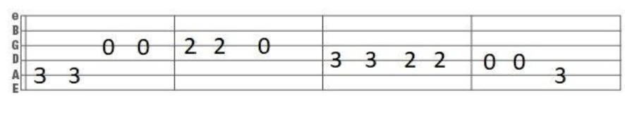

Tablature, or commonly known as tab, is a form of sheet music used widely amongst musicians with strings and frets. Guitarists widely use them, and it is a type of sheet music easy to access and play in a short length of time.
Tabs are read by numbers, on a stave with 6 lines instead of 5 lines like normal sheet music. There are 6 lines, because those lines represent the strings of the guitar. Tabs are normally shown so that the bottom line is the 6th string (the most thickest string/Top string when holding a guitar normally and looking from above), and the top line of the stave is the 1st string (the thinnest string/most bottom string when holding a guitar normally and looking from above.)

Using this tab line as an example, we can see that there are numbers on the string. The only
con we know of tabs are that we are unable to see the note value, and it is hard to know the rhythm of the
song. Many people assume the rhythm with the amount of spacing between each note, but some tab variations
do have note values on the top!
This excerpt's first line reads:
5th string fret 3 and 3rd string fret 0 (no fret/open).
Continue the rest of the tab, and try play it! What song do you think it is? 😉
Back to top of page